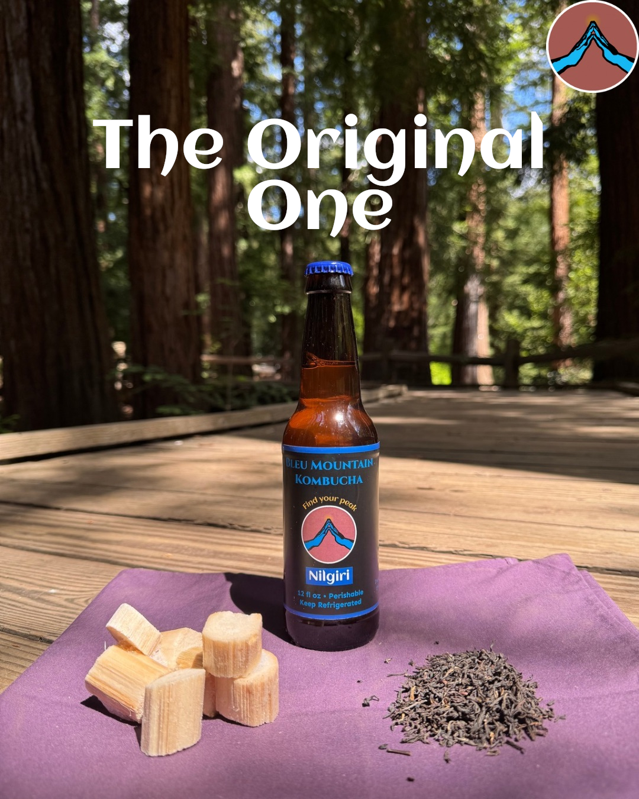
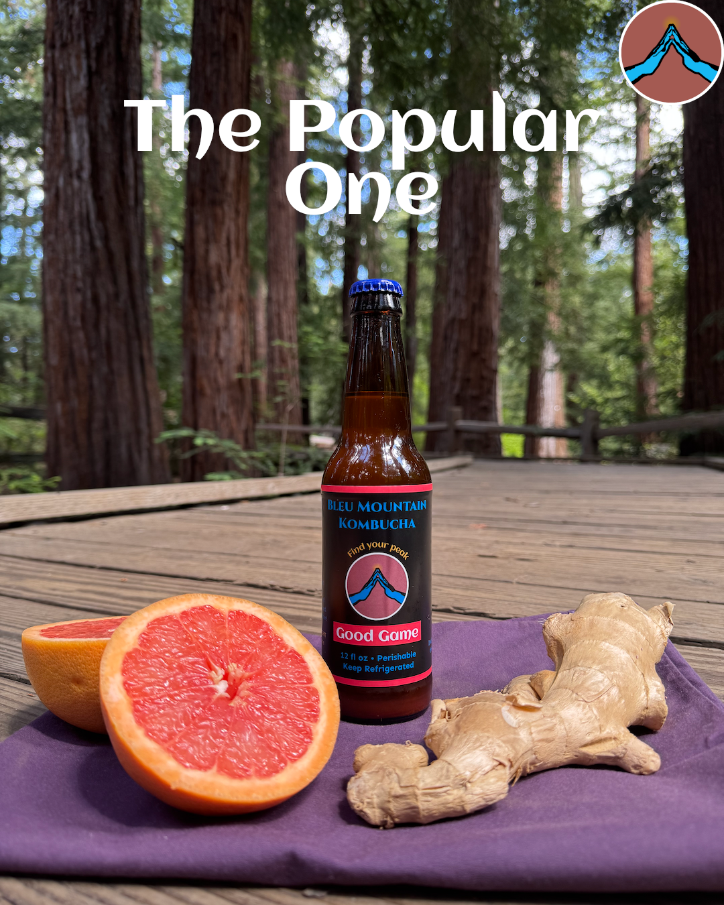
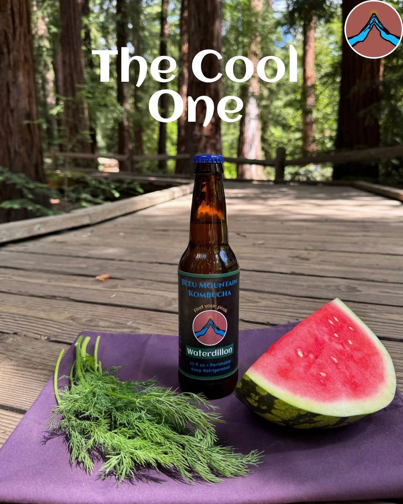
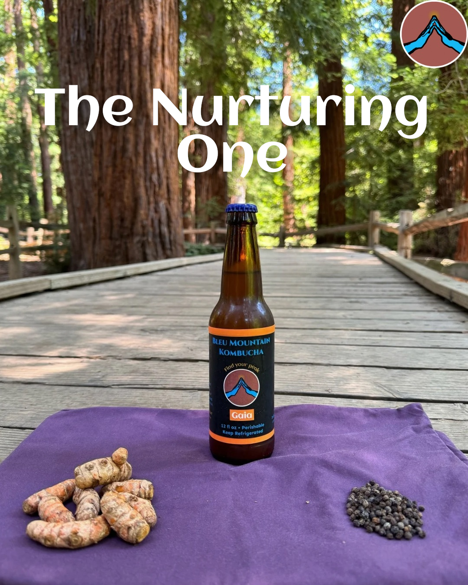
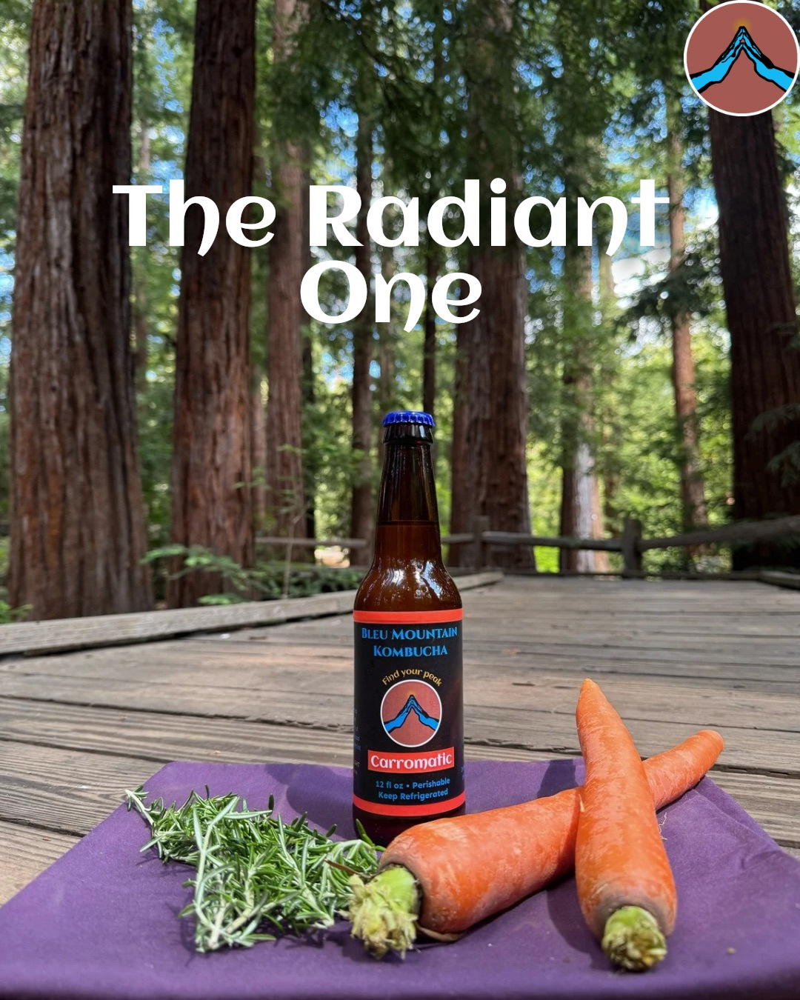
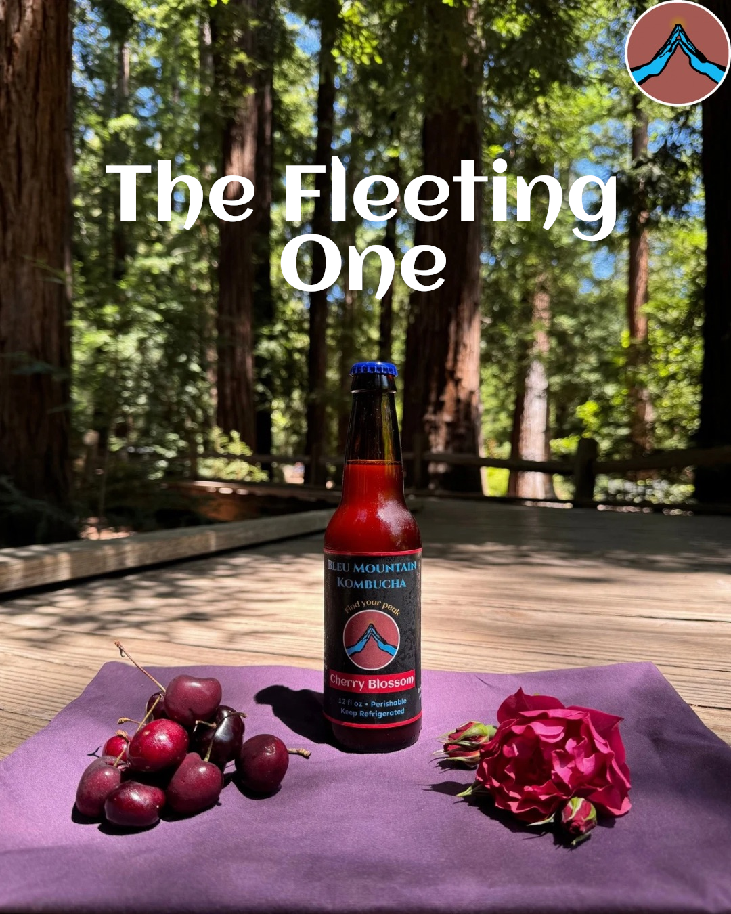
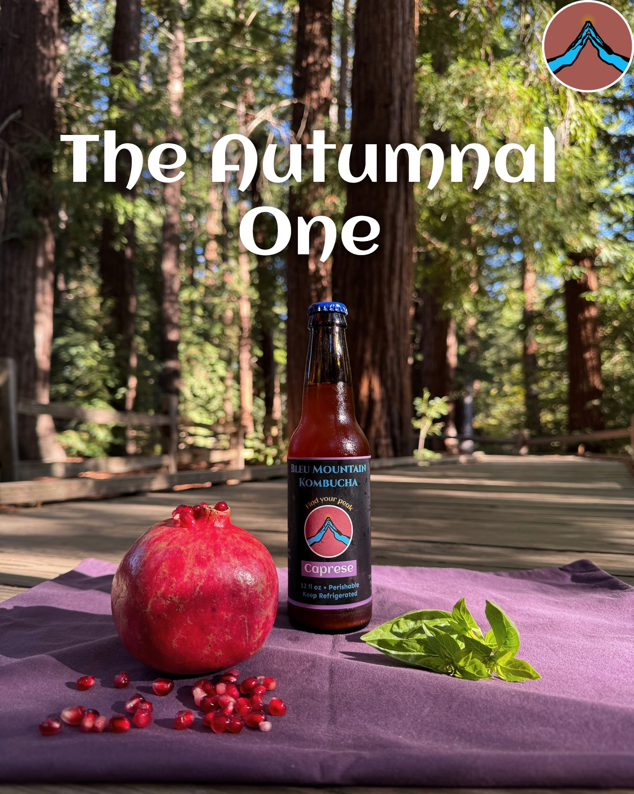
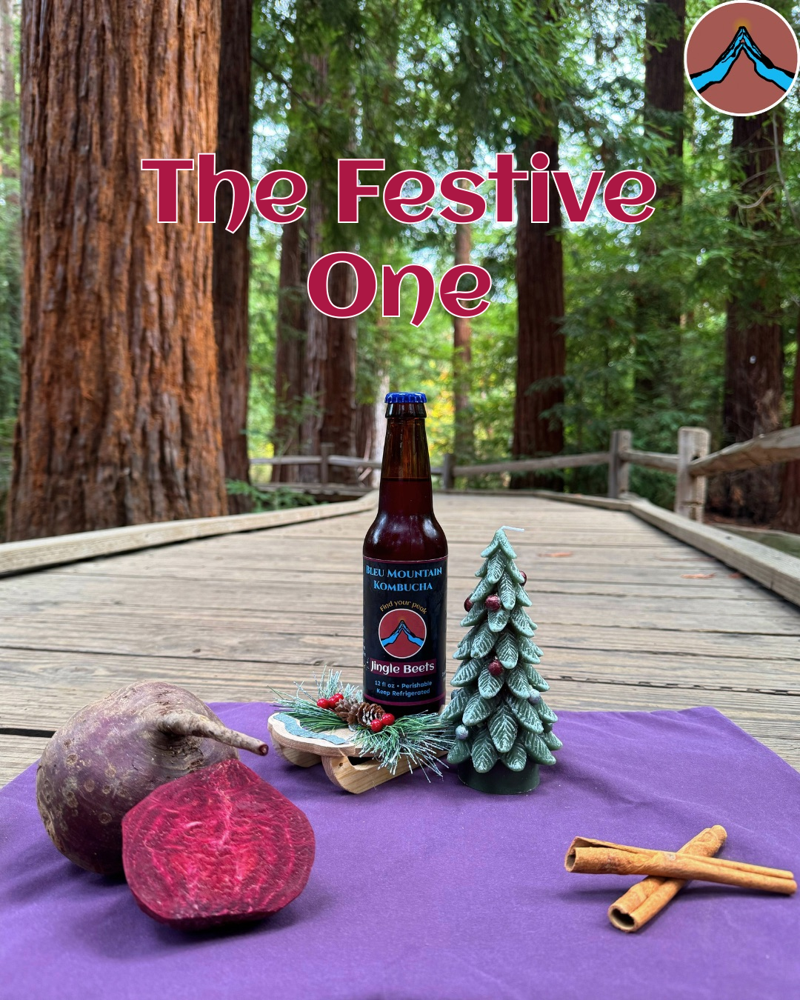
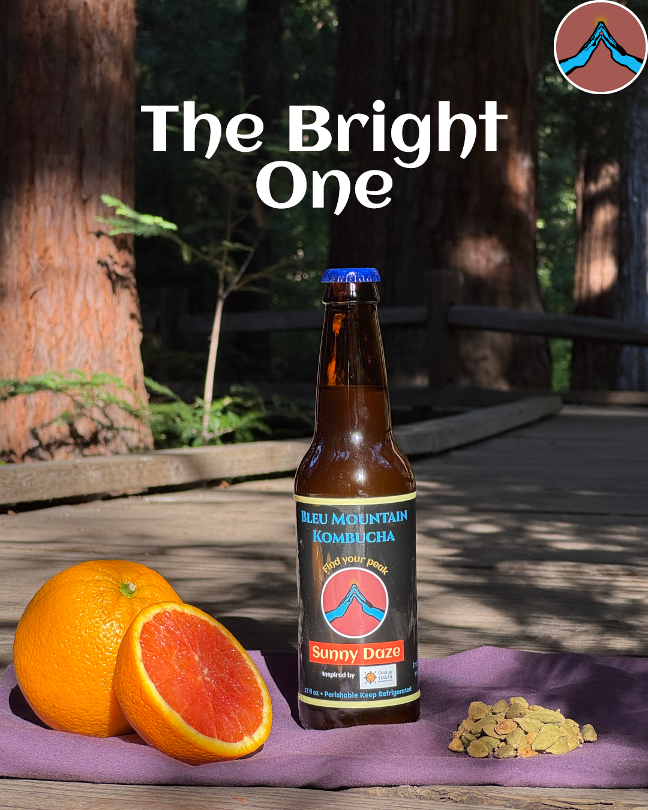

{kind=link}

Nilgiri
The base flavor that lies behind all others. Consisting simply of organic Nilgiri tea and organic cane sugar that has been fermented with our SCOBY, this is the root chakra of Bleu Mountain Kombucha.
Kombucha is a fermented tea beverage made by adding a symbiotic culture of bacteria and yeast (SCOBY) to a solution of tea and sugar. During fermentation, the living cultures metabolize the sugar and tea to yield a carbonated beverage that is slightly sweet and slightly tart.
We exclusively ferment using organic cane sugar and organic Nilgiri black tea. This unique type of tea, grown 8,000 feet above sea level, is known for it’s fruity and floral notes, and it is a popular choice for ice teas. As such it brings a refreshing quality to our kombucha. ’Nilgiri’ translated from Tamil means ‘blue mountain’..
Bleu Mountain Kombucha follows traditional methods of fermentation, without the use of kegs. This means that all carbonation is 100% natural.

Every human being possesses a unique and ever-changing bodily ecosystem, so the consumption of kombucha impacts each of us in distinct ways. That being said, research has shown that kombucha can help with regulating:
Additionally, anecdotal experiences from kombucha drinkers suggest that it aids in digestion (and overall gut health), provides an energy boost, balances internal pH, controls appetite, boosts immunity, and helps with muscle recovery.

Just like in wine and beer, kombucha fermentation involves yeast feeding on sugar, which results in the creation of ethanol (i.e. alcohol).
However, Unlike wine and beer, kombucha fermentation also includes bacteria feeding on ethanol. Thus, only trace amounts of alcohol remain in the finished product, and so it is not intoxicating.

Every batch of Bleu Mountain Kombucha begins with the same base: organic cane sugar and organic Nilgiri black tea. From there, each flavor is fermented with real fruit, herbs, or spices, giving it its own distinct character. Hover over each bottle to learn more about the flavor.
Each flavor is carefully crafted with dueling ingredients. Our aim is to balance just two unique ingredients, letting you taste each of them distinctly — Never repeated, always intentional.

The base flavor that lies behind all others. Consisting simply of organic Nilgiri tea and organic cane sugar that has been fermented with our SCOBY, this is the root chakra of Bleu Mountain Kombucha.

This one is for the ginger lovers. The punchy spice of ginger is impossible to miss, followed swiftly by a tangy burst of citrus.

Watermelon soda meets... pickle juice? This unsuspecting duo comes together to create a surprisingly refreshing summer beverage!

This one brings together turmeric and black pepper to give you a powerful anti-inflammatory boost. Meaning "Mother Earth", Gaia is dedicated to the mother who passed on the wisdom of this ancient combination.

This fizzy carrot flavor is elevated by fresh rosemary sprigs, which are themselves brought to life by the natural acidity of our kombucha. A year-round favorite!

The sweeter the berry, the darker the hue. Cherries are front and center for this one, with hints of rose, almost as an afterthought. One of our most requested flavors, but also one of the most limited, due to the seasonal availability of cherries.

A fall favorite, pairing juicy red pomegranate with fresh basil. If you close your eyes, each sip almost resembles a caprese salad!

A flavor to keep you grounded during the holidays! Earthy beetroot lends a vibrant color that you taste with your eyes first and earthy cinnamon helps to keep you warm

Inspired by our friends over at Orange Elaichi. Everybody's favorite golden citrus fruit comes to life with just a touch of cardamom!
We are proud to be available at various locations throughout the region. Check below for the nearest farmers market & pop-up events!

21250 Stevens Creek Blvd
Cupertino, CA 95014
Sundays from 9:00am to 1:00pm
Year-Round

194 W 25th Ave
San Mateo, CA 944035
Tuesdays from 3:00pm to 7:00pm
May through October
Have a question or comment? Fill out the form below and we'll get back to you as soon as possible!
{kind=link}
{kind=link}
{kind=link}
{kind=link}
{kind=link}
{kind=link}
{kind=link}
{kind=link}